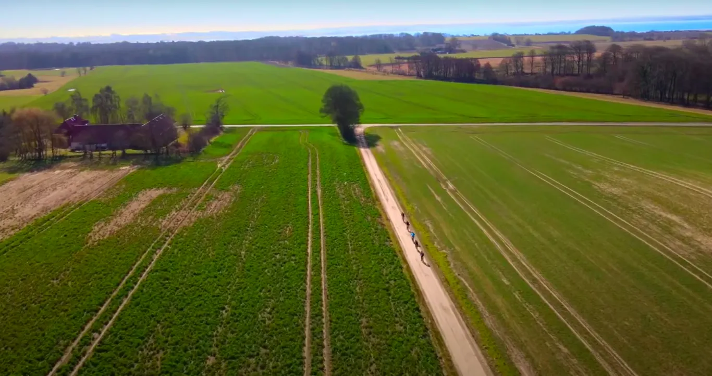
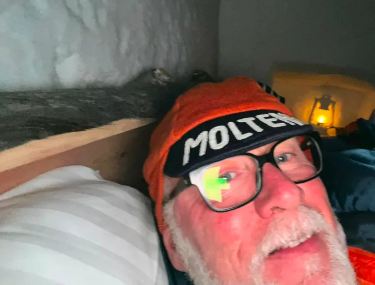

Optakt: Spring Classic GRVL

Lørdag 26. marts stiller Squadra Molteni til start i vel nok Danmarks smukkeste forårsklassiker: Spring Classic GRVL, der køres på små lande- og grusveje vest for Odder.
Spring Classic GRVL er inspirere af de 3 smukkeste løb i verden: Flanderen Rundt, Strade Bianche og Paris Roubaix! Derfor har løbet et strejf af Italiensk, Belgisk og Fransk kultur samt stemning fra netop disse forårs klassiker. Af samme grund er Squadra Molteni inviteret til løbet.


Som altid er vi mere end klar til sæsonstart. Holdets ryttere har passet vintertræningen, og på vores træninglejr for 3 uger siden, var det tydeligt, at alle var hvor de skulle være. Ja, et par ryttere er blevet bedt om at holde lidt igen med træningen, for ikke at toppe for tidligt, lyder det fra sportsdirektør Klaus Maarup Kjærsgaard.
Stærkt 9-mandshold
Det er et stærkt 9-mands hold som Squadra Molteni sender til start;
Niels Bjørnsteen, Eigil Leegaard, Grane Maaløe, Jens Langergaard, Jeppe Thiemer, Lars Munch, Peter Meinert, Svend Seegert og Max Nielsen – og taktikke er næsten som den plejer.
Vi kører selvfølgelig for at vinde retroklassen – både individuelt og holdkonkurrencen. Og vi vil nok køre lidt afventende i starten, men når vi først kommer ud på de lange grussektorer, så vil vi gå i “Formazione Molteni” – og her skal vores konkurrenter stå tidligt op, for at følge med, fortæller Kaptajn Bjørnsteen.
Absolut højdetræning
Holdets stærke grusekspert, Jens langergaard, der som altid, har en vigtig rolle som stærk dieseltonser på første del af løbet, er sendt på højdetræning i det nordligste Lapland. Her træner han med rensdyrslæde (Jens trækker en klassisk rensdyrslæde efter sin Molteni crosscykel, red) i minus 27 grader og sover i iglo i minus 20 grader. Det skulle ifølge de seneste studier giver næsten den dobbelte effekt end fx ved at sove i almindeligt ilttelt.
Kulden har jo også den fordel, at når jeg kommer hjem og skal køre Spring Classic GRVL, så er det jo næsten for varmt at køre kort-kort i det danske forår, fortæller Jens fra en kortbølgeradiotelefonforbindelse fra Torassieppi, Lapland.


Spring Classic GRVL køres søndag 26. marts med start om mål ud for den store tribune ved Spektrum Odder.